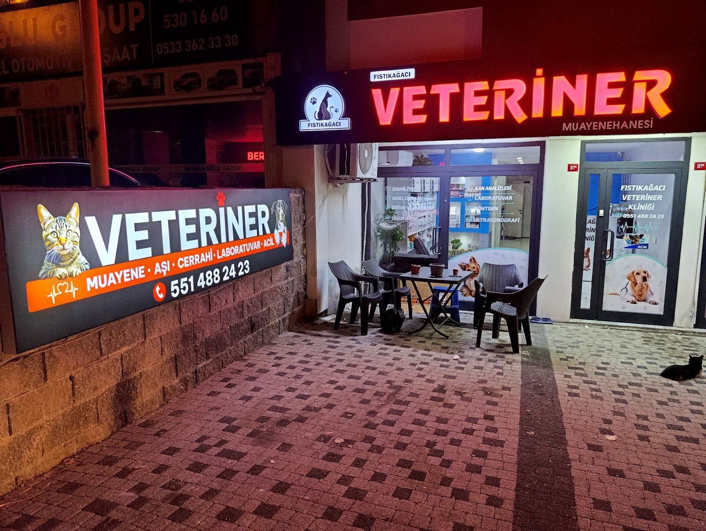

Üsküdar · Veteriner Kliniği
Fıstıkağacı
Fıstıkağacı
Veteriner Kliniği
Üsküdar, Sultantepe'de her gün 09:00–23:00 saatleri arasında açığız.
Hizmetlerimiz
Dostlarınız için
Aşı
Diş çekimi
Yoğun bakım
Çip
Google yorumları
Müşterilerimiz ne diyor
★★★★★
“Köpeğim Hektorun bir süredir kusma şikayeti vardı. Çok endişeliydik. Ama Ali hoca ve Yusuf hoca sayesinde artık sağlığına kavuştu. Artık her konuda fıstıkagaci veteriner kliniğine gidiyoruz. Hem ilgili, güler yüzlü hem de profesyoneller.”Yetkin C.
★★★★★
“Gittiğimiz günden beri başka yere gitmedik. Hem hekimler hem ekip çok ilgili, asla ticari yaklaşım yok. Süreci detaylı anlatıyorlar, gereksiz işlem yapmıyorlar. Temiz, düzenli ve güven veren bir klinik.”Firdevs H.
★★★★★
“Kedimin sabaha karşı evde nefes alamamaya başlaması üzerine eve yakın olması sebebiyle acilen gittik. Kedime doğru müdahaleyi yaptılar, saatlerce uykusuz kalıp ilgilendiler. Kedimin yaşadığı bu rahatsızlık böyle iyi hekimleri bulmamıza vesile oldu.”Burcu Y.
★★★★★
“Kedimin uzun süredir göz problemi vardı, çok fazla klinik gezdik ama sonunda doğru kliniği bulduk. Kedimin tedavisi devam etmekte, ilgi ve alakaları için Yusuf ve Ali beye çok teşekkür ediyorum.”HANİFE

Mekânımız
Bizi ziyaret edin
Sultantepe Mah. Selvilik Cd. No:97/A, 34674 Üsküdar/İstanbul adresindeyiz.
Tekerlekli sandalye erişimli oturma alanı ve tuvalet
Konum ve saatler
Yolunuz düşerse
Çalışma saatleri
| Her gün | 09:00–23:00 |
|---|
Adres
Sultantepe Mah. Selvilik Cd. No:97/A, 34674 Üsküdar/İstanbul
Yol tarifi al
İletişim